Getting Started
Joining the Game
To join a game, navigate to the "Game" page on the website. The game will load automatically and place you into a lobby. If you are the first player in the lobby you must wait for a second player to connect. If you are the second player in a lobby the game will start automatically once both players have entered a username.
Choosing a Username
Upon connecting to a lobby, you will be prompted to enter a username. You may choose any username you like so long as it does not contain profanity or exceed 8 characters. Once a username is chosen all high scores earned will be tied to that username.
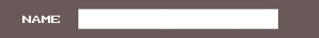Using Game Chat
While in the lobby and during game play you will have access to game chat. This will be located to the right of the HUD and allow you to communicate with your teammate. To send a message simply click to select the text field, then type your message. Once your message is ready you can send it by pressing the "Enter" key or click the "Send" button to the right of the text field.
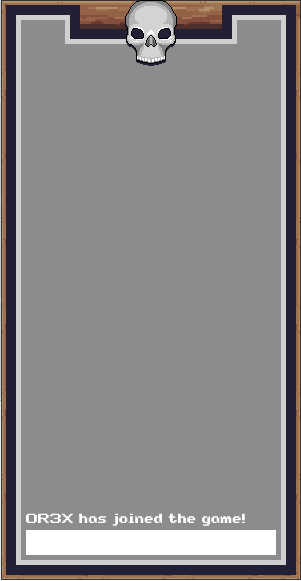UI and Game Elements
The UI is split into three main areas:
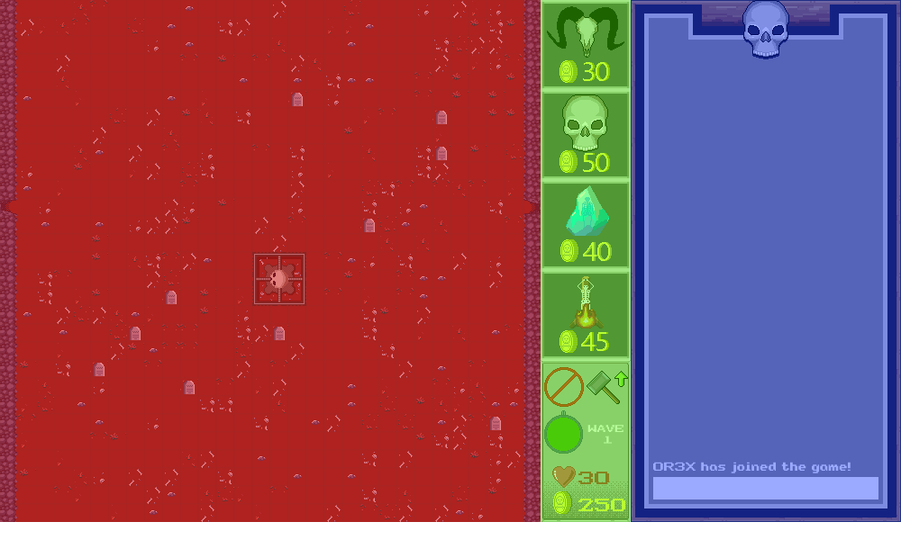-
Play Field
The play field is where all the action take place. This is where you will build, upgrade, and destroy your towers during the build phase, and where the zombies will assault your fortifications during the attack phase.
-
HUD
The HUD is where action and information items live. At the top of the HUD you will find build icons for the various tower types available to you. If a build icon is greyed out it means that you don’t have enough gold to purchase a tower of that type, or that tower type is not currently available to you.
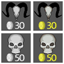Below the build icons you will find the tower management buttons. Selecting one of these will let you destroy or upgrade towers respectively.
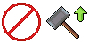Next you will find the phase timer. This displays the time remaining in the current phase of gameplay as well as the current wave.
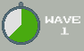Finally at the very bottom of the HUD is your gold counter. This displays the amount of gold you have earned in battle that can be used for upgrading and purchasing new towers.
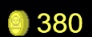 -
Game Chat
The game chat is to the far right of the screen, and simply displays messages sent and received between players.
Towers
There are 4 different towers in the game. Each type of tower attacks in a unique way. These towers can also be upgraded to improve their speed, range, and power.
- Magic Tower 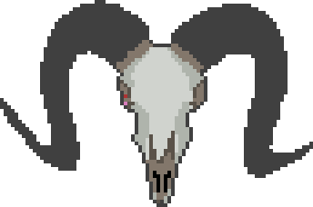
- Gas Tower 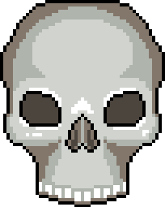
- Ice Tower 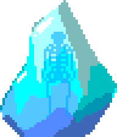
- Fire Tower 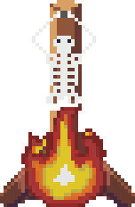
The Enemy
Rival necromancers have sent their minions to attack your seat of power and destroy you! Fend off their attacks by summoning necromantic towers anf defeat the encroaching zombies. These ghoulish fiends gladly march straight at your defenses and make a beeline for your stronghold!
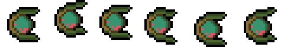Build Phase
Placing Towers
To place a tower, you must first select the build icon for the type of tower you would like to build from the HUD to the right of the play area. Build icons that are greyed out can not be selected due to lack of funds. After selecting a build icon, you are free to place that tower anywhere in the play area that isn’t already occupied by another object. You can build as many towers as you like until you run out of gold.
Destroying Towers
If you’ve placed a tower in the wrong spot or would simply like to recoup some gold for different towers you can do so by destroying towers. To do this you must first select the "Destroy Tower" icon. After this, any active towers you click on in the play area will be destroyed and the gold returned to your total.
Upgrading Towers
As the game progresses the enemies will get stronger and greater in numbers. You will need to upgrade your towers to keep up! Each tower can be upgraded a total of ten times. Each upgrade will increase tower stats such as range, fire rate, and damage per shot. This will be critical in keeping up with the growing threat!
Attack Phase
After the build phase timer depletes the attack phase will begin automatically. During this phase enemies will enter the screen from the left and right sides and attempt to make it to your base in the center of the screen. Any towers within range of the enemies will automatically track and shoot them until they move out of range. If enemies make it to your base you will lose hit points. If you lose too many hit points you will lose the game. While there isn’t anything to control during the attack phase it's crucial that you pay attention to the action to see where your weaknesses might lie. This is a good time to make use of the game chat to strategize with your team mate and plan out your actions for the next build phase.
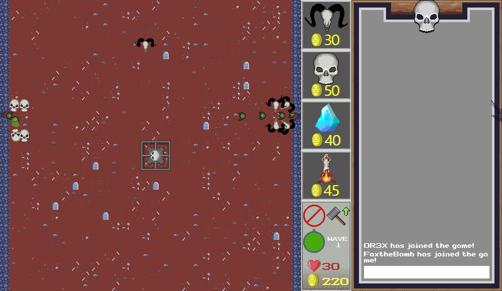Post-Game and Highscores
Once all of your hit points are depleted the game will automatically end and your final score for the game will be displayed. The score is determined by the wave you made it to, in addition to a number of of factors such as final gold count. If you manage to make a high score it will be displayed on the high scores page of the website along with you and your teammate’s usernames.
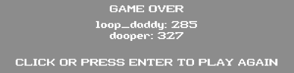